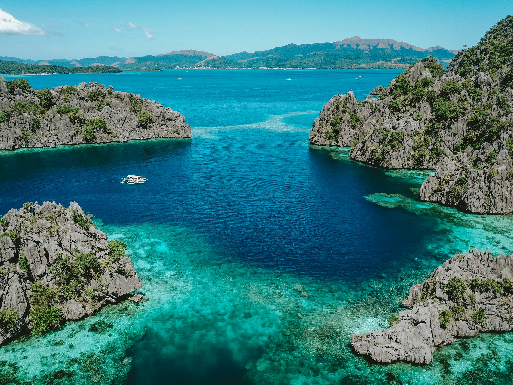
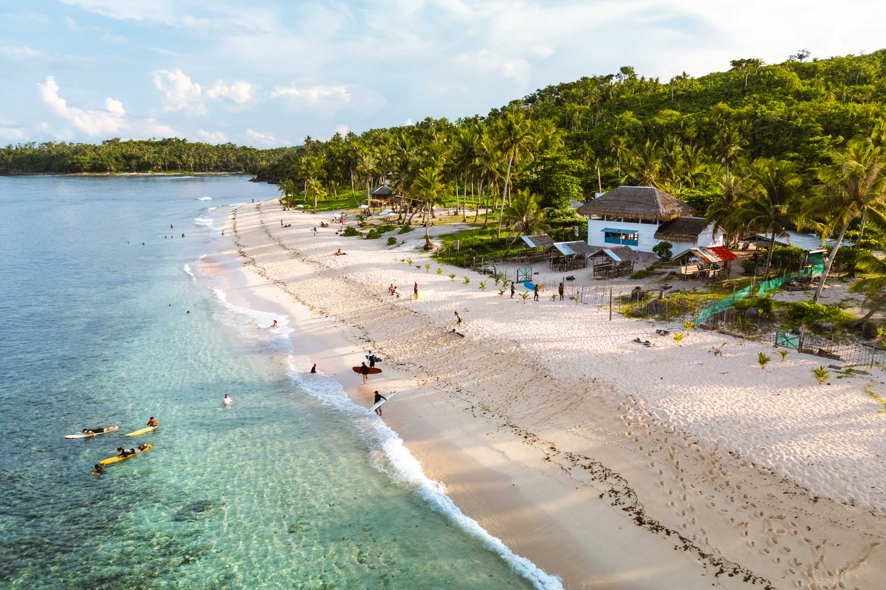

Popular Tour Packages

Boracay Getaway
A world-famous white-sand paradise where fun never ends. Boracay offers crystal-clear waters, thrilling water sports, lively nightlife, and endless souvenirs to take home. Perfect for those who crave both adventure and relaxation by the sea.

El Nido, Palawan Escape
Discover El Nido, Palawan’s hidden lagoons, towering cliffs, and breathtaking caves. Dive into turquoise waters, explore island treasures, and experience the untouched beauty that makes Palawan a true tropical escape.

Siargao Adventure
Ride the waves in the surfing capital of the Philippines! Siargao offers turquoise lagoons, palm-fringed roads, and an unforgettable nightlife where island beats and good vibes last until sunrise.
Traveler Reviews
LeBron James
"The best trip of my life!"
Boracay was absolutely stunning with white sand and clear blue waters!
The tour guides were friendly and made every part of the trip easy to enjoy.
The agency’s itinerary was well planned and made our vacation stress-free! KING JAMES OUT 👑
Christiano Ronaldo
"Perfect for first-time visitors"
Palawan was beyond beautiful! The lagoons and cliffs were unforgettable.
The tour guides were helpful and always made sure everyone was comfortable.
The agency did a great job organizing a smooth and fun itinerary. SIUUUUUUUUUUUUUU
Jimmy "Mr.Beast" Donaldson
"Highly recommended!"
Siargao was absolutely unforgettable. The beaches, waves, and people made the trip incredible.
The island’s nightlife was lively and full of good vibes. I even tipped the team $10,000 for their amazing service!💸💸💸